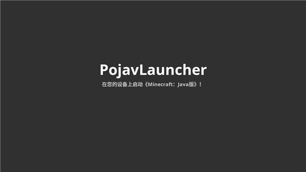
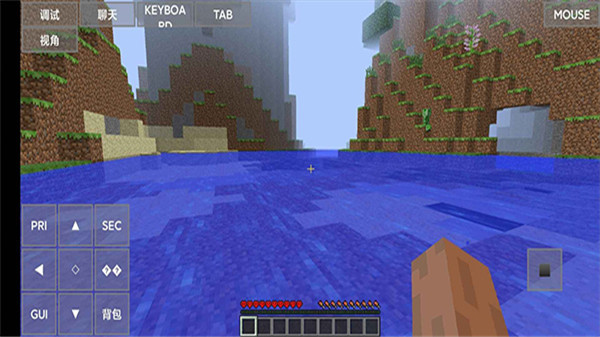

宿舍午休惊现 Minecraft Java 版——我在手机上跑了一整个下午的模组
午休想玩 Minecraft 却摸不到电脑？手机上的基岩版又没有 Fabric 模组生态。直到我发现 PojavLauncher，它让 Android 真正跑起了 Java 版 Minecraft，从 RAM 分配到 Zink 渲染器，每一步都是折腾党才懂的快乐。
锁在抽屉里的笔记本电脑
那是周三中午，宿舍的日光灯关了两盏，室友们三三两两爬上床，手机屏幕调到最暗，整个房间进入一种半明半暗的午睡节奏。我盯着桌上那个抽屉，锁扣歪歪扭扭地卡在那里——我的 ThinkPad 就躺在里面，被我自己锁起来的。
不是不想玩，是论文已经拖了三天，早上出门前咬牙给自己定了规矩：不写完第五章不许开机。
但是，午休四十分钟，除了刷短视频还有什么选择？
我掏出手机，打开 Minecraft 基岩版。进入存档，看到那片熟悉的针叶林，树还是那片树，矿洞还是那个矿洞，但是——没有 OptiFine，没有 Sodium，没有我攒了一个月的 Fabric 模组包。基岩版的世界流畅是流畅，可总觉得少了点什么。
"你试试 PojavLauncher？"
这句话是隔壁床的阿远说的。他翻了个身，露出一只眼睛盯着我的屏幕："你想玩 Java 版？手机上能跑啊。"
我当时的反应是，你别瞎扯。Java 版 Minecraft 从来都是 PC 游戏，手机上那点算力，能跑个基岩版都得砍到最低画质。
"你装一个试试，不费事儿。"阿远说完这句就把耳机塞回耳朵，不再理我。
午休结束后我抱着试试看的心态搜了一下，发现还真有这么个东西：PojavLauncher——它的官网上介绍这是一个开源的 Android 启动器，专门用来在手机上跑 Minecraft Java Edition。它的思路也简单——内置了一个精简的 Java 运行环境，把 OpenGL 调用翻译到手机 GPU 能理解的 Vulkan 接口上。
从安装到能玩，踩了三个坑
从官方下载拿了安装包装好，打开界面的时候我心里是嘀咕的。第一眼看上去就是个移植过来的桌面启动器，按钮排布和 PC 版几乎一模一样，但手机屏幕就那么大，触控操作能不能顺畅是个问号。
第一个坑就是 RAM 分配。启动器默认给游戏分了 1GB，我的手机物理内存 8GB，一开始我想当然地拖到了 4GB。结果进入游戏还没加载完存档，手机就开始发烫，切出去回个微信的功夫，游戏进程直接被系统杀掉了。后来才明白，Android 本身就要吃掉两三个 GB 的系统内存，分给游戏的再多也不能超过物理 RAM 的一半。我把滑块拉回 2.5GB，重启启动器，这次稳了。

第二个坑是渲染器。PojavLauncher 默认用的是 GL4ES 路线，进去之后画面确实在动，但帧率稳在 25 FPS 左右，转头的时候画面一帧一帧地跳，像在看老电影。折腾了半小时才找到设置里的渲染器选项，切换到 Zink——这条路线直接把 OpenGL 翻译成 Vulkan，省掉了中间那层转译损耗。切换完重启游戏，帧率直接冲到了 55 FPS 以上，画面也不再卡顿。后来进游戏按 F3 看调试屏幕，看到右上角显示 Zink (Mesa) 那行字的时候，心里那个踏实。
第三个坑是模组加载器。我想装的是 Fabric，因为 Fabric 的性能模组在手机上效果最好。启动器内置了 Forge 安装向导，Fabric 反而得自己去装。下载了 Fabric Loader 的 jar 文件，扔进启动器指定的目录，重启启动器，版本下拉菜单里终于出现了 fabric-loader-0.15.7-1.20.1。第一次启动 Fabric 的时候卡了整整两分钟——它要扫描模组目录、初始化配置，进了主菜单之后我松了口气，这个加载过程和 PC 上一模一样。
Fabric 三件套的魔法
模组是 PojavLauncher 的灵魂所在。如果说基岩版是"手机上能玩就行"，那 Java 版加了 Fabric 就是"手机上也能玩到 PC 级体验"。
我装的是性能三件套：Sodium、Lithium、Starlight。这三个模组在手机上的效果比 PC 上还要明显。Sodium 重写了整个渲染引擎，FPS 直接翻倍；Lithium 优化了游戏逻辑和内存管理，消除了那些周期性的垃圾回收卡顿；Starlight 重写了光照引擎，洞穴里再也不会一卡一卡地生成光影。
装完之后回到那片针叶林，我站在原地转了三圈——帧率始终稳定在 60 FPS，渲染距离调到了 8 区块，连粒子效果都没降到最低。说真的，这个体验和我电脑上跑基岩版差不多，而这台手机只是一台两年前的中端机型。
后来我还尝试装了几个光影包。去PojavLauncher文档翻了一下才确认，光影包对手机 GPU 开销巨大，要选 Lite 档的。我找了 Sildur's Vibrant Lite，渲染距离降到 4 区块，开了 V-Sync 之后帧率稳稳锁在 60。画面确实好看了不少，水面反光、树叶透光都有了，代价就是手机背板烫得能煎鸡蛋，玩半小时就得给它降降温。

午休之后的那些天
从那天起，PojavLauncher 成了我手机上的常驻 App。论文还是得写，但写完一章就摸出手机玩二十分钟。我建了一个新存档，名字叫「宿舍午休存档」，里面有我自己搭的小木屋、种的一片麦子、还有一条挖了三格宽的护城河。
当然它也不是完美的。有些用到 OpenGL 4.5 高级特性的模组在 Zink 上会报错，周期性卡顿在渲染距离拉得太高的时候还是会出现。手机毕竟是手机，物理上的限制摆在那里——玩超过一小时就得停下来让它降降温，不然 CPU/GPU 降频之后 FPS 会骤降到 30 以下。
但话说回来，这些都算什么呢？我一个星期前还觉得，手机上玩 Minecraft 只能玩玩基岩版，模组生态那是 PC 专属。现在 PojavLauncher 把这堵墙凿穿了，虽然凿得有点粗糙，虽然需要自己调 RAM、选渲染器、折腾模组加载器，但这种自己动手把一件事搞定的感觉，不就是折腾党想要的吗？
资料都在那儿
写这篇的时候翻了不少资料，从 RAM 分配的推荐表到 Zink 支持的 GPU 型号，大部分细节都是从 PojavLauncher 的中文文档里抠出来的。这套资料的维护记录在GitHub上最完整，国内网络环境下访问Gitee和GitCode镜像会更顺畅。